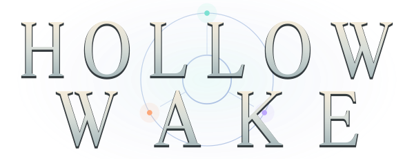
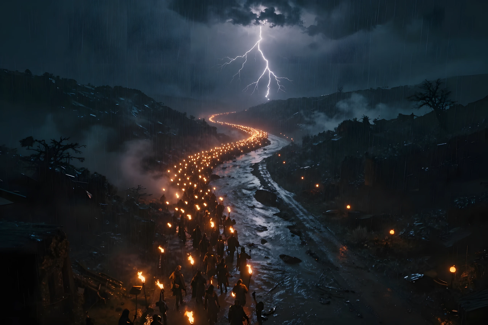
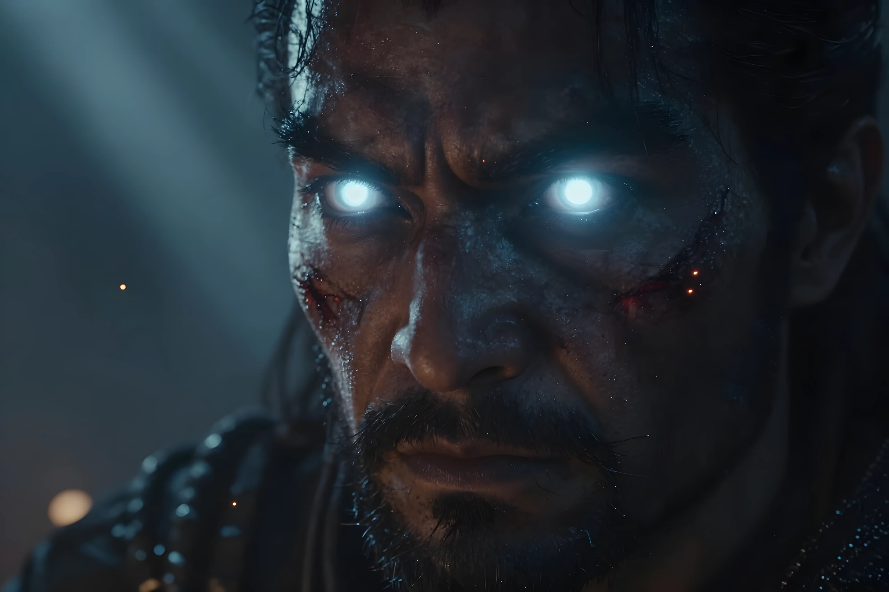

Something beyond every turn
Forests, frozen lakes, ruined labyrinths. Explore connected regions and find places worth returning to.
An action RPG by Arianna

One more drop. One more life.
Find a skill worth building around.
Carry its light into a world that wants it back.
01 / Beyond the last light
Leave Lastlight behind. Follow a road into rival territory, take a dangerous detour, or push deeper for the next extraordinary drop. How far you go is up to you.

02 / A vessel for your ambition
Your class is a beginning. Build on its strengths, borrow from a shared pool of skills, or let an unexpected drop change everything.
Steel / Fury / Momentum
Trade safety for fury. Build momentum with heavy strikes, then tear through the fight in a whirlwind of steel.
Explore this classFlame / Storm / Ruin
Turn destructive elements into your answer to an approaching horde. Find the spell that makes the whole battlefield yours.
Explore this classBone / Binding / Dominion
Call the dead to your side. Shape an army from bone and dark magic, and let your followers carry the fight.
Explore this class03 / The next drop changes everything
A skill gem is only the start. Change how it behaves with supports, follow its branching upgrades, and chase the unique that brings your idea to life.
A new way to fight.
Supports reshape its behavior.
Passives and loot bring it together.
Explore skills, supports, and uniques in the database.
Every point is a possibility
Trace a route through the passive tree. See your bonuses. Share the plan.

04 / What you leave behind
One life makes every decision matter. As a Mortal, your fall ends the run, but part of your earned essence becomes account progress. Your next vessel begins with a little more behind it.
Return for what you lost. Unlock new possibilities. Or, in time, accept the Immortal covenant and face death on different terms.
Recruit a mercenary, bring a friend online, or share the screen in couch co-op.
There is another life waiting
The prototype is free to play. Your next build is out there.
Play in browser No install · Progress saves in this browserA world in the making
Hollow Wake is in active development. Art, balance, and features are evolving, and updates may reset progress. The browser and downloads offer the main game; the seamless-world build is an ongoing experiment.
Share your experience